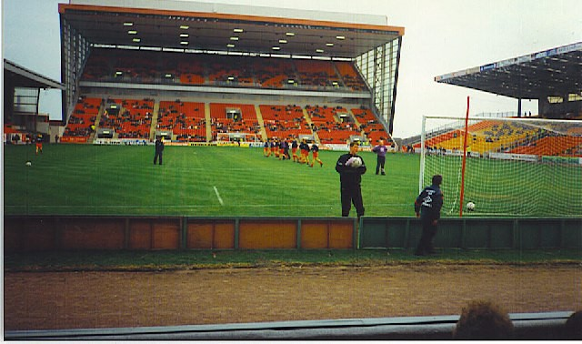

Chương 13

ại Pittodrie, chẳng ai còn gọi Alex Ferguson là “Cùi Chỏ Dao Lam”, vì ông không còn ra sân để thi thố độc chiêu ấy nữa. Thay vào đó, ông được đặt cho biệt danh mới: Fergie Dữ Tợn. Chẳng những chỉ cầu thủ, cả quan chức CLB cũng gọi Alex như thế. Mỗi lần đến tìm Alex, thư ký CLB Ian Taggart lại hỏi: Dữ Tợn có ở đây không?
Độc giả hẳn còn nhớ chuyện Alex giận dữ ném chai nước ngọt vỡ tan tại phòng thay đồ Love Street? Aberdeen cũng thường xuyên chứng kiến những cơn thịnh nộ như thế. Gordon Strachan nhớ lại cảnh HLV cầm khay trà quẳng vào tường, khiến nước văng tứ phía, cốc chén vỡ bay mỗi nơi một mảnh. Mark McGhee thì không quên lần Alex đá chậu quần áo, làm đồng phục tung bay phấp phới. Có cái quần rơi đúng ngay vào… đầu một cầu thủ trẻ.Anh này sợ chết khiếp, cứ ngồi im, không dám động đậy gì. Alex thì cứ thế tiếp tục bài “giáo huấn”, đến khi “giáo huấn” xong rồi, mới quay sang anh chàng đội quần: “Này, cậu làm cái trò gì thế? Còn chờ gì mà không bỏ cái quần xuống hả?”
Ở đây, cần nhắc lại: Alex Ferguson sử dụng những cơn thịnh nộ của mình như một liệu pháp tâm lý: Ông cố tình làm cầu thủ phải sợ, rồi vì sợ mà cố gắng thêm lên. Sự giận dữ của Alex nhiều khi chỉ là một sản phẩm sắp đặt khéo léo.HLV đội trẻ Len Taylor từng chứng kiến Alex bàn mưu tính kế với một cầu thủ lão tướng.“Anh sẽ chửi chú một trận tơi bời”, Alex nói, “Chú cứ ngồi im, đừng nói gì cả nhé.” Thế rồi, Alex chửi thật, hăng đến sùi bọt mép, còn lão tướng kia chỉ cúi đầu chịu trận. Những cầu thủ trẻ đứng cạnh sợ xanh mặt “Ôi trời, đến lão tướng mà còn bị như thế!”.Từ đó trở đi, hễ HLV nói gì, họ đều tuân lệnh răm rắp, và luôn nỗ lực hết mình để không bị trừng phạt.
Nghệ thuật “diễn xuất” của Alex lên đến bậc thượng thừa.Gordon Strachan có lần thấy ông trút giận lên một cầu thủ, trông thật đến độ không thể thật hơn.Nhưng khi mắng xong, đi ngang qua Strachan, Alex kín đáo đá lông nheo một cái.Lúc ấy.Strachan mới biết thầy vừa diễn. Alex McLeish cũng nghi ngờ Alex chỉ giả vờ, vì thái độ ông thầy nhiều khi chỉ trong vài phút mà thay đổi liên tục: Đang vui vẻ bỗng nổi giận đùng đùng, rồi vừa giận đó lại vui vẻ như không. Nếu thật sự nổi giận, thì với cục tức to đùng nằm trong bụng, không thể nào thay đổi thái độ nhanh như vậy được.Tuy biết thầy mình diễn, nhưng cầu thủ như Strachan và McLeish không dám lờn mặt, bởi nếu lờn mặt, Alex sẽ…giận thật và thi hành kỷ luật. Lúc đó thì tương lai chỉ còn màu xám!
Chính vì chỉ diễn,Alex không “thù dai”. Vừa mắng học trò tối hôm trước, sáng hôm sau gặp lại, ông vui vẻ như chẳng có chuyện gì xảy ra. Ngay cả khi bị học trò phản ứng, ông cũng không để bụng.Do đa số đều sợ và phục tùng Alex, nên thỉnh thoảng, khi có người dám nổi lên chống đối, ông lại lấy làm thú vị, và khen thầm người đó có bản lĩnh. Có thể ông sẽ kỷ luật người đó, nhưng rồi sẽ tha thứ.Chỉ khi nào học trò đem chuyện nội bộ ra rêu rao với báo chí, vạch áo cho người xem lưng, ông mới đi đến chỗ tuyệt tình.
Giữa những người dám phản ứng Alex có tiền đạo cứng đầu Steve Archibald.Trong một trận gặp Celtic, Archibald lập được hattrick, giúp đội nhà giành thắng lợi 3-2.Kết thúc trận đấu, anh đem luôn quả bóng về nhà làm của riêng.Bị Alex nhắc phải đem trả lại bóng, Archibald giận lắm.Hôm sau, khi Alex đang ngồi uống trà cùng trợ lý Pat Stanton, cửa văn phòng bỗng bật mở.Archibald đứng đó, quả bóng ở dưới chân.“ĐM, bóng của ông đây!”Anh ta hét, rồi co giò sút một cú, làm vỡ tan bóng đèn.
Alex chỉ cười. Ở Archibald, ông thấy lại hình ảnh ngổ ngáo của mình khi xưa!
Mark McGhee thậm chí còn “chịu chơi” hơn Archibald. Một bận, vì bị HLV hiểu lầm và mắng oan, McGhee túm ngay áo thầy định hành hung, may mà các đồng đội đứng gần kịp xông vào can thiệp. Sau khi bình tĩnh trở lại, chàng ta mới sợ xanh mặt: “Chết cha! Mình vừa làm gì thế này? Bây giờ phải tính sao đây?”.Tên “nghịch đồ” vội chạy đến xin lỗi Alex, ngỡ rằng phen này sẽ tàn đời ở Pittodrie.Chẳng ngờ, McGhee vừa nói mấy câu, Alex đã gạt đi ngay “Không sao, đấy là lỗi thầy. Do thầy hiểu lầm em trước.”
Trước kia, McGhee chỉ sợ Alex. Sau vụ đó trở đi, anh kính trọng thầy hơn bao giờ hết.
Không phải đối với ai, Alex cũng dữ tợn. Có những cầu thủ cần hiền với họ, họ mới đá hay. John Hewitt là một người như thế. Hewitt tính tình nhát gan, và tinh thần rất yếu, lúc nào cũng sợ Alex như sợ cọp. Chỉ cần HLV nhìn một cái, anh ta đã hết hồn, nếu như còn mắng chửi, chắc là chẳng còn sức mà ra sân nữa. Vậy nên, với Hewitt, Alex thường chỉ nói những lời khích lệ. Với Willie Miller, ông cũng ít khi nặng lời, vì cũng như Bryan Robson ở Old Trafford sau này, Miller là một thủ quân có sức ảnh hưởng rất lớn, cần phải được tôn trọng.
Tuy nhiên, nếu cầu thủ bê tha ăn chơi, Alex quyết không tha. Ông rất kỹ trong việc quản quân. Học trò ăn những thứ gì, mỗi ngày ngủ bao nhiêu giờ, Alex đều kiểm soát. Chẳng điều gì về học trò mà ông không biết. Chẳng hạn như khi hậu vệ Doug Rougvie tậu về một chiếc môtô, Alex ngay lập tức gọi anh đến: “Cậu có biết lái môtô rất dễ bị tai nạn không? Hoặc cậu bán nó, hoặc tôi sẽ bán cậu!”
Đêm đến, đôi khi Alex lái xe vòng vòng qua nhà các cầu thủ, để kiểm tra xem họ có đi nhậu không. Uống một vài ly thì không vấn đề gì, nhưng nhậu say thì tuyệt đối cấm. Cầu thủ vào hạng ngôi sao thì càng bị theo dõi sát sao. Một đêm thứ sáu, Gordon Strachan ngồi trong nhà nhìn ra, thấy xe của ông thầy lượn đi lượn lại mấy vòng!
Mỗi khi một học trò lấy vợ, Alex cảm thấy nhẹ nhõm hơn, vì có vợ rồi sẽ bớt chơi bời.Không như một số HLV khác, ông không quan tâm vấn đề tình dục trước trận đấu.Đời người chỉ vài cái khoái, cấm cái này thì phải thoải mái cái khác, nếu hết thảy đều cấm, thì còn gì là lạc thú? “Ăn nhiều rau xanh, tận hưởng tình dục” là lời khuyên Alex giành cho đệ tử.
Đối với cầu thủ trẻ, Alex lại càng quan tâm gấp bội. Bất kỳ cậu bé nào muốn vào đội trẻ Aberdeen, đều phải được HLV trưởng đích thân sát hạch, mà mỗi lần sát hạch thì kỹ lưỡng vô cùng. “Đánh giá một cầu thủ vào một ngày nắng đẹp, và trong trận đội bóng của cậu ta đang thắng là không đủ”, Alex nói, “Phải trở lại vào một ngày mưa tầm tã, xem xem cậu ta có còn chơi hay dưới điều kiện thời tiết khắc nghiệt hay không, rồi phải xem cậu ta chơi như thế nào khi đội mình đang thua, liệu có giữ được tinh thần không.”
Hơn thế nữa, khi tuyển cầu thủ, Alex không chỉ nhìn vào khả năng, mà còn rất quan tâm đến tính cách, đạo đức.“Ổng không bao giờ chấm những cậu vô kỷ luật”, Len Taylor tiết lộ “Ai mà bị hạnh kiểm kém ở trường là ổng từ chối ngay, chỉ một người cũng không nhận, vì một con sâu cũng đủ làm rầu nồi canh rồi”. Một khi đã chấm cậu bé nào, Alex sẽ đích thân đến gặp cha mẹ cậu ta, một phần nhằm tạo dựng niềm tin với các bậc phụ huynh, phần khác là để đánh giá môi trường gia đình của học trò tương lai. Nếu gặp phụ huynh nghiêm khắc, quan tâm tới việc giáo dục con cái, ông yên tâm phần nào.Gặp phụ huynh dễ dãi, ông sẽ để ý, uốn nắn con họ nhiều hơn, chứ không phó mặc việc giáo dục cho gia đình.
Thời kỳ tiền-Ferguson, Pittodrie có sẵn hệ thống đào tạo trẻ khá tốt, nhưng các tuyển trạch viên chỉ “phủ sóng” thành phố Aberdeen và những vùng phụ cận. Alex nhanh chóng nhận ra: Sẽ lãng phí biết bao, nếu chỉ tập trung tìm tài năng tại miền Bắc. Ông cho mở thêm trường đạo tạo trẻ ở Glasgow, nơi “địa linh nhân kiệt”, nhân tài hội tụ[1]. Mỗi tháng một lần, Alex xuống thăm Glasgow, kiểm tra tình hình đào tạo tại đây.
Đã có HLV chuyên trách đội trẻ, nên với đa số CLB, HLV trưởng thường giành hết thời giờ cho đội lớn.Alex thì không thế. Ông thường xuyên theo dõi đội trẻ tập luyện, nhớ hết tên từng cầu thủ, và hay đến dùng bữa trưa chung với những tài năng “nhí” của mình. Trong mỗi bữa ăn, ông luôn quan tâm, hỏi thăm họ đã tiến bộ đến đâu.Đối với các học viêntuổi 11-12, đó là một sự khích lệ lớn.
Dĩ nhiên, dù bé đến đâu, học viên đều được dạy dỗ một cách nghiêm khắc, trong khuôn khổ kỷ luật thép. Ngoài việc toát mồ hôi trên sân tập, họ còn phải “lao động công ích”: Nào là rửa xe, quét dọn, rồi đánh giày cho đàn anh. Hằng ngày, học viên trẻ phải lo sắp xếp những thiết bị tập luyện, rồi đem đến sân tập cho đội một, nếu lỡ quên thứ gì, liền bị bắt chạy ngược hàng cây số trở lại Pittodrie để lấy.Đó là chưa nói ai ai cũng phải giữ tác phong nghiêm chỉnh, ngay đến việc xịt keo tạo dáng tóc cũng bị cấm.
Đa số các học viên đều đến từ xa, nên CLB phải thuê nhà cho họ ở trọ.Chủ nhà trọ đều nằm trong hệ thống “mật vụ” của Alex Ferguson. Ông dặn đi dặn lại các
“điệp viên”: Phải để ý bọn nhỏ, coi chúng làm những gì. Nếu ngoan thì thôi, còn hư đốn nghịch phá là phải báo ngay cho tôi.Nếu che giấu cho chúng, tôi sẽ đem chúng qua ở nhà khác, không thuê nhà ông/bà nữa đâu.
Tóm lại, với các học trò, Alex Ferguson như một người cha, luôn luôn quan tâm, luôn luôn săn sóc.Tuy có nghiêm khắc, dữ dằn, nhưng ông làm mọi điều chỉ để các con tiến bộ hơn lên.“Làm việc dưới quyền thầy Fergie khổ như cực hình”, Willie Miller, thủ quân Aberdeen, nhận xét, “Làm điều gì cũng phải thật hoàn hảo mới thôi.Nhưng tham vọng của thầy truyền cảm hứng cho chúng tôi.Không có thầy, tôi không sao có được sự nghiệp như ngày nay.”
“Thương cho roi cho vọt”, chẳng phải ông bà ta cũng dạy vậy hay sao?

SVĐ Pittodrie (ảnh: en.wikipedia.org)
[1]Trước nay, các CLB Scotland chỉ mở trung tâm đào tạo tại tỉnh nhà.Nhờ tinh thần tiền phong của Alex Ferguson, Aberdeen trở thành CLB đầu tiên sở hữu một trung tâm ở ngoại tỉnh.